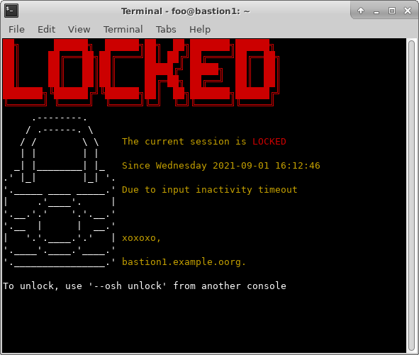

FAQ
"The Bastion", really?
We've been using this software for quite a while at OVHcloud, and there it has always been known as "the bastion": nobody ever bothered to find a fancy name for it. So, when we decided to release it in opensource, the naming problem arose. After going through some possible names, we realized that nothing would work, as everybody would keep naming it "the bastion" anyway, so, we decided to call it just The Bastion.
Why using common::sense?
Because it's usually a good idea to ensure you use common::sense before writing code!
On a more serious note, this is almost like using strict and warnings,
but with a very reduced memory footprint.
When you run a bastion with thousands of simultaneous active sessions with that many users, it starts to matter.
Why Perl?
There is probably and endless list of why it's the perfect language for this, and another similarly endless list of why Perl is completely irrelevant and other $COOL_LANGUAGE would be a better fit, but some "why" reasons include:
It works everywhere, and most OSes have it installed by default
Perl has this cool "taint" mode that adds security to untrusted program inputs, we use this on sensitive code
One of the design choice of The Bastion has always been to be very close to the system, leveraging some low-level Operating System functions, which are easier to interact with using a scripting language
The Bastion has a loose origin from an old script written at OVHcloud in the early days, back when the de-facto usual language used internally was Perl
Why not using a PKI?
Well, you can, of course! However this is a very centralized way of managing your accesses, with all the power in the hands of whoever controls your CA. It can be a highly successful if done very carefully, with a lot of security and processes around the certificates delivery workflows. Managing a CA correctly is no joke and can bite you quite hard if done improperly. This also happens to be a somewhat recent addition to OpenSSH, and if you have a lot of heterogeneous systems to handle, this might be a no-go. You can read more about this topic here: https://blog.ovhcloud.com/the-ovhcloud-bastion-part-1/
What does osh mean in --osh?
This has long been forgotten. Some people say it used to mean "Ovh SHell" at some point, but nobody knows whether it's true or just a legend.
What are the recommended hardware specifications?
They're actually quite low. Down to its basics, the bastion is merely a fancy wrapper around ssh,
so if you have a device that handles ssh well, it'll handle the bastion just fine.
Now to give you some data points, we've observed that 250 concurrent users take up 2.5 Gb of RAM (including the operating system's own footprint, and the usual daemons such as auditd, syslog, etc.). So a rule of thumb would be 1 Gb per 100 simultaneous sessions. If you expect to get a lot of new connections per minute (not necessarily long-lived), it's advised to use SSD drives however, as the bastion workload pattern for disk I/O is a lot of random seeks to write logs and ttyrecs. Mechanical hard drives are very bad at this.
Can I run it under Docker in production?
Technically you can, but you have to think about what are the implications (this is true regardless of the containerization technology). What's important to understand is that it adds another layer of abstraction, and can give you a false sense of security. If you either have the complete control of the host running Docker (and hardened it properly), or you fully trust whoever is running the host for you, then this is fine. Otherwise, somebody might have access to all your keys and you have no way to know or block it.
Note that the provided Dockerfiles are a good start, but no volumes are defined.
To ensure that all the accounts don't disappear on a docker rm, you would at least need to ensure that
/home, /etc/passwd, /etc/shadow, /etc/group, /etc/gshadow are stored in a volume,
in addition to /etc/bastion and /root/.gpg.
You'll also need an SSH server, obviously, and probably a syslog-ng daemon.
Can I install it on my already existing server?
This is discouraged if your server is already doing something else, such as hosting a website, handling your e-mails or running a database.
From a security standpoint, it's a bad idea because if your server gets hacked due to one of the other services you're hosting, the SSH keys could get compromised even if The Bastion itself has no security issue.
This is also discouraged due to the design of The Bastion: being deeply intertwined with the OS it's running on, it might make changes that seem intrusive from the point of view of other running services. Such as creating and deleting system accounts and groups from time to time, modifying the PAM configuration, or hardening the SSH client and server configurations system-wide, which could break other services or workflows that expect to be running on a default (non-hardened) SSH configuration.
How to use The Bastion with the SSH ProxyCommand option?
tl;dr: you can't.
Fast answer: you can't, because The Bastion is not a proxy, nor what is often called an "ssh jumphost".
Granted, sometimes these are also called "bastions", hence the confusion.
Note that this also applies to the -J or JumpHost ssh option, which is just a simplified ProxyCommand.
Long answer: The Bastion is acting as a trusted party between you (the admin or the robot) and the server of the infrastructure you need to access. To achieve this, when you use the bastion to connect to the server, there are two distinct ssh connections present at the same time:
The ingress ssh connection, between you and the bastion. For this connection your local private ssh key is used to authenticate yourself to the bastion
The egress ssh connection, between the bastion and the remote server you need to access. For this connection your bastion egress private ssh key (or a group egress private ssh key you're member of) is used to authenticate the bastion to the remote server
Those two connections are distinct, and the bastion logic merges those two so that you're under the impression
that you're directly connected to the remote server. There is no dynamic port forwarding happening on the bastion
to enable access to the remote server from your desktop, network-wise (which is what JumpHost does).
Using ProxyCommand with the bastion doesn't make sense because with this option, your local ssh client expects
to talk the SSH dialect on the STDIN of the ProxyCommand you're giving, and it'll try to use your local SSH key
to authenticate you through it, which won't work as it's only used for the ingress connection.
However, when you use the usual bastion alias, in STDIN you have the remote server terminal directly,
all the SSH stuff has already been done.
Attempting to summarize this a bit would be: ProxyCommand and JumpHost are useful when the server
you're trying to connect to can't be accessed network-wise from where you stand, and needs to be accessed
through some kind of proxy instead, where The Bastion's logic is to use two distinct SSH connections,
and two distinct authentication phases, with two distinct SSH keys (yours for the ingress connection,
and your bastion egress key for the egress connection).
What is session locking?
Session locking can be enabled in the global configuration, through the idleLockTimeout option.
When enabled, the interactive SSH session will automatically lock itself after a defined amount of idle time.
Unlocking such a session can be done, but re-authentication is required, i.e. connecting to the bastion
from another console, and using the unlock command.
Here, idle time is defined as keyboard input idle time, so even if a remote command might be running
(such as tail -f), the connection will still be considered idle if no input is detected. This is by design.
Such as configuration can be required by policy or regulations, in some sensitive environments, to ensure opened connections are automatically cut off when unused. Locking such sessions can be an alternative to cutting (see the idleKillTimeout option) as it gives a chance to unlock the session before tearing the connection down. Both can also be used, such as locking first, then tearing down after more time has passed without the session being unlocked. Note that while a session is locked, any potentially running remote command will still be running, as locking the session will just hide the normal console output, and prevent any input to be registered. Unlocking the session will simply resume display to the console. Session locking can be seen as the equivalent of a desktop screensaver, but for SSH interactive sessions.
A locked session looks like this:
Can I use Ansible over The Bastion?
Yes, you can, by using a wrapper available here.
Please note however that some Ansible modules may not use the builtin SSH command of Ansible, which we override with our wrapper, but some other mechanism we can't hook into. This is for example the case of the network_cli module of Ansible, which underneath uses Paramiko, a Python library to handle SSH connections, which prevents our wrapper to be used (see this GitHub issue for more information).
Can The Bastion record sessions with script or in plaintext format instead of ttyrec?
The ttyrec program is actually a fork and a superset of script, and their output format is very similar. The main change is that for ttyrec, there is timing info added in the output file, so that it can be replayed "at the same pace" that the captured console.
With both programs, the entire console output is captured, i.e. plaintext, but also control codes, such as "move the cursor here", "change the background color to this", etc. If you cat the output files of script or ttyrec, you'll see plaintext but also these non-printable control-codes. It is not trivial to convert these to "real" plaintext because you have to interpret all the control codes correctly to reproduce the actual output, which is an actual terminal does.
For example, if I type "helk" then "backspace" then "lo", on my console, "hello" will be displayed when I'm done,
but in the output files of both script and ttyrec, this is what will be written: helk^H^[[Klo.
So grepping for "hello" inside these files will not work, even if you would have expected it to work.
This even gets more complicated for programs using curses such as vim, where you can navigate in a file: a lot of control codes are used to control what the console displays, and there is no way, from what is displayed in the console, to know what is part of the preexisting file, and what is being typed by the person. In both cases, it just ends up on the screen.
Now, some solutions exist. You might want to have a look at IPBT ("It's Playback Time"), which is an advanced
ttyrec player from the author of PuTTY: IPBT.
It has the option of actually grepping for a string inside a ttyrec, and it does this by rendering each "frame"
in-memory, then actually looking for the output in the emulated console.
This would work with the "hello" example above.
It also has a tool named ipbt-dump that should help converting ttyrec files to something that you can better
work with.
(adapted from this GitHub issue).